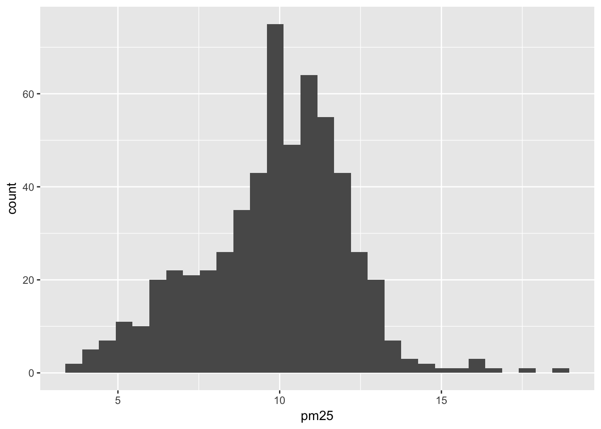
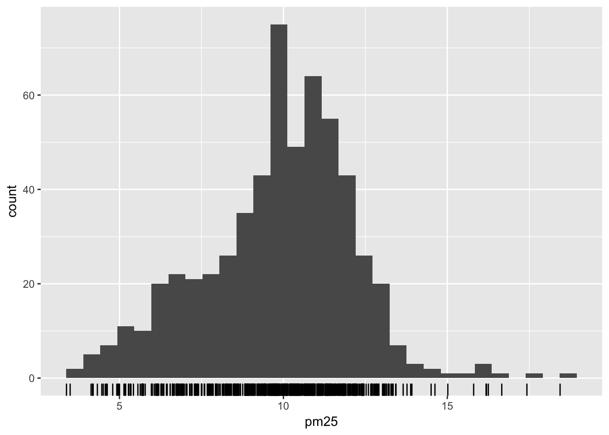
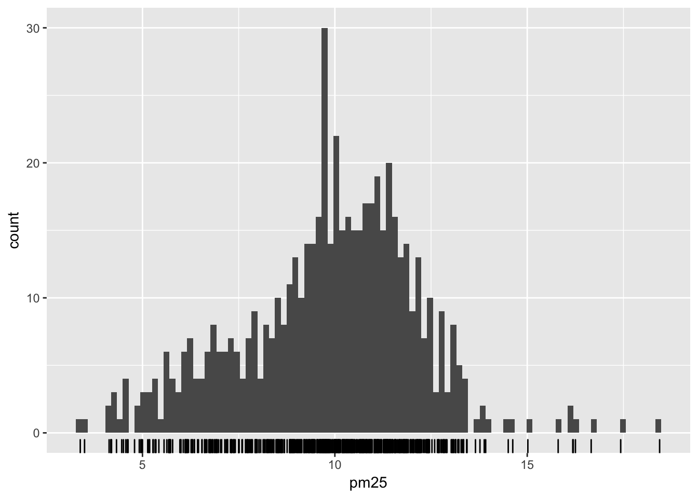
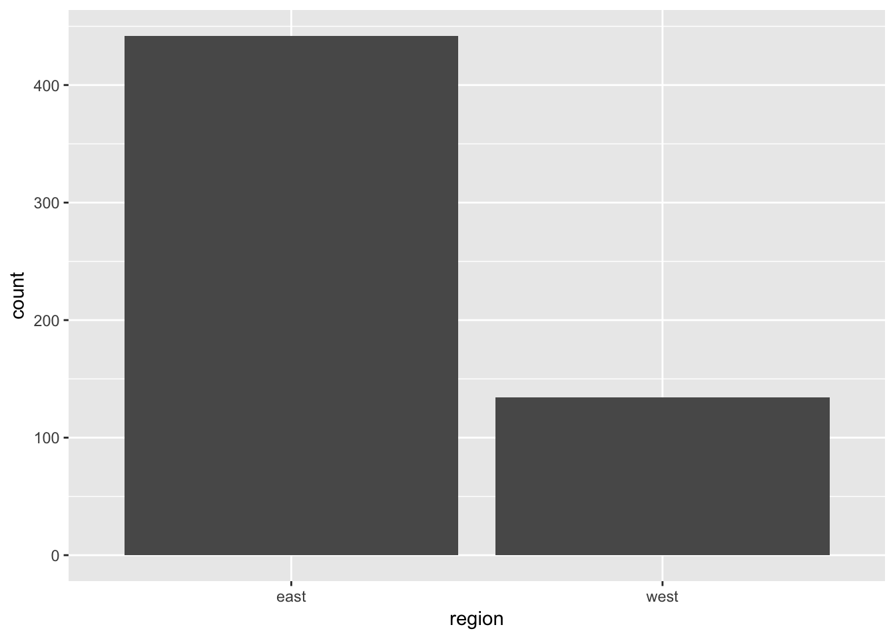

Exploratory data analysis
library(tidyverse)## Warning: Installed Rcpp (0.12.12) different from Rcpp used to build dplyr (0.12.11).
## Please reinstall dplyr to avoid random crashes or undefined behavior.Exploratory data analysis (EDA) is often the first step to visualizing and transforming your data.1 Hadley Wickham defines EDA as an iterative cycle:
- Generate questions about your data
- Search for answers by visualising, transforming, and modeling your data
- Use what you learn to refine your questions and or generate new questions
- Rinse and repeat until you publish a paper
EDA is fundamentally a creative process - it is not an exact science. It requires knowledge of your data and a lot of time. At the most basic level, it involves answering two questions
- What type of variation occurs within my variables?
- What type of covariation occurs between my variables?
EDA relies heavily on visualizations and graphical interpretations of data. While statistical modeling provides a “simple” low-dimensional representation of relationships between variables, they generally require advanced knowledge of statistical techniques and mathematical principles. Visualizations and graphs are typically much more interpretable and easy to generate, so you can rapidly explore many different aspects of a dataset. The ultimate goal is to generate simple summaries of the data that inform your question(s). It is not the final stop in the data science pipeline, but still an important one.
Characteristics of exploratory graphs
Graphs generated through EDA are distinct from final graphs. You will typically generate dozens, if not hundreds, of exploratory graphs in the course of analyzing a dataset. Of these graphs, you may end up publishing one or two in a final format. One purpose of EDA is to develop a personal understanding of the data, so all your code and graphs should be geared towards that purpose. Important details that you might add if you were to publish a graph2 are not necessary in an exploratory graph. For example, say I want to explore how the price of a diamond varies with it’s carat size. An appropriate technique would be a scatterplot:
ggplot(diamonds, aes(carat, price)) +
geom_point() +
geom_smooth()## `geom_smooth()` using method = 'gam'
This is a great exploratory graph: it took just three lines of code and clearly establishes an exponential relationship between the carat size and price of a diamond. But what if I were publishing this graph in a research note? I would probably submit something to the editor that looks like this:
ggplot(diamonds, aes(carat, price)) +
geom_point(alpha = .01) +
geom_smooth(se = FALSE) +
scale_y_continuous(labels = scales::dollar) +
labs(title = "Exponential relationship between carat size and price",
subtitle = "Sample of 54,000 diamonds",
x = "Carat size",
y = "Price") +
theme_minimal()## `geom_smooth()` using method = 'gam'
These additional details are very helpful in communicating the meaning of the graph, but take a substantial amount of time and code to write. For EDA, you don’t have to add this detail to every exploratory graph.
Air pollution in the United States
The U.S. Environmental Protection Agency (EPA) sets national air quality standards for outdoor air pollution.3 One standard concerns the long-term average level of fine particle pollution, also known as PM2.5. The standard requires that the “annual mean, averaged over 3 years” cannot exceed 12 micrograms per cubic meter. Data on daily PM2.5 are available from the EPA.
Let’s use EDA to answer the following question: are there any counties in the U.S. that exceed the national standard for fine particle pollution?
Import the data
The dataset contains the annual mean PM2.5 for each U.S. county averaged over 2008-2010.
(pollution <- read_csv("data/avgpm25.csv"))## Parsed with column specification:
## cols(
## pm25 = col_double(),
## fips = col_character(),
## region = col_character(),
## longitude = col_double(),
## latitude = col_double()
## )## # A tibble: 576 x 5
## pm25 fips region longitude latitude
## <dbl> <chr> <chr> <dbl> <dbl>
## 1 9.771185 01003 east -87.74826 30.59278
## 2 9.993817 01027 east -85.84286 33.26581
## 3 10.688618 01033 east -87.72596 34.73148
## 4 11.337424 01049 east -85.79892 34.45913
## 5 12.119764 01055 east -86.03212 34.01860
## 6 10.827805 01069 east -85.35039 31.18973
## 7 11.583928 01073 east -86.82805 33.52787
## 8 11.261996 01089 east -86.58823 34.73079
## 9 9.414423 01097 east -88.13967 30.72226
## 10 11.391494 01103 east -86.91892 34.50702
## # ... with 566 more rowsstr(pollution)## Classes 'tbl_df', 'tbl' and 'data.frame': 576 obs. of 5 variables:
## $ pm25 : num 9.77 9.99 10.69 11.34 12.12 ...
## $ fips : chr "01003" "01027" "01033" "01049" ...
## $ region : chr "east" "east" "east" "east" ...
## $ longitude: num -87.7 -85.8 -87.7 -85.8 -86 ...
## $ latitude : num 30.6 33.3 34.7 34.5 34 ...
## - attr(*, "spec")=List of 2
## ..$ cols :List of 5
## .. ..$ pm25 : list()
## .. .. ..- attr(*, "class")= chr "collector_double" "collector"
## .. ..$ fips : list()
## .. .. ..- attr(*, "class")= chr "collector_character" "collector"
## .. ..$ region : list()
## .. .. ..- attr(*, "class")= chr "collector_character" "collector"
## .. ..$ longitude: list()
## .. .. ..- attr(*, "class")= chr "collector_double" "collector"
## .. ..$ latitude : list()
## .. .. ..- attr(*, "class")= chr "collector_double" "collector"
## ..$ default: list()
## .. ..- attr(*, "class")= chr "collector_guess" "collector"
## ..- attr(*, "class")= chr "col_spec"Each row contains the average PM2.5 level, the five-digit code indicating the county (fips), the region of the country where the county is located, and the longitude and latitude of the centroid for that county.
1 dimension summary
One-dimensional summaries look at variation within a specific variable. Here, let’s examine variation in PM2.5 using a few different graphical techniques.
Histogram
ggplot(pollution, aes(pm25)) +
geom_histogram()## `stat_bin()` using `bins = 30`. Pick better value with `binwidth`.
It appears there is a high concentration of counties within the 9-12 micrograms per cubic meter range. To view the actual data points, we use geom_rug():
ggplot(pollution, aes(pm25)) +
geom_histogram() +
geom_rug()## `stat_bin()` using `bins = 30`. Pick better value with `binwidth`.
Given the associated penalties for exceeding the pollution standard, it makes sense most observations will be close to or under 12 micrograms per cubic meter. That said, there are still a fair number of counties exceeding the level of 12. What causes this? That could be a new question generated during your EDA.
By default, geom_histogram() bins the observations into 30 intervals of equal width. You can adjust this using the bins parameter:
ggplot(pollution, aes(pm25)) +
geom_histogram(bins = 100) +
geom_rug()
Notice the spike at 9 micrograms per cubic meter. We cannot immediately tell what causes this spike. but it could be worth exploring later.
Bar chart
ggplot(pollution, aes(region)) +
geom_bar()
Clearly there are more counties in the eastern U.S. in this dataset than in the western U.S.
2 dimensions
Visualizing data in two dimensions allows us to assess covariation and differences in variation across groups. There are two major approaches to visualizing two dimensions:
- Multiple window plots
- Two-dimensional graphs
Multiple window plots
3+ dimensions
Session Info
devtools::session_info()## Session info -------------------------------------------------------------## setting value
## version R version 3.4.1 (2017-06-30)
## system x86_64, darwin15.6.0
## ui X11
## language (EN)
## collate en_US.UTF-8
## tz America/Chicago
## date 2017-07-19## Packages -----------------------------------------------------------------## package * version date source
## assertthat 0.2.0 2017-04-11 CRAN (R 3.4.0)
## backports 1.1.0 2017-05-22 CRAN (R 3.4.0)
## base * 3.4.1 2017-07-07 local
## bindr 0.1 2016-11-13 CRAN (R 3.4.0)
## bindrcpp * 0.2 2017-06-17 CRAN (R 3.4.0)
## boxes 0.0.0.9000 2017-07-19 Github (r-pkgs/boxes@03098dc)
## broom 0.4.2 2017-02-13 CRAN (R 3.4.0)
## cellranger 1.1.0 2016-07-27 CRAN (R 3.4.0)
## clisymbols 1.2.0 2017-05-21 cran (@1.2.0)
## codetools 0.2-15 2016-10-05 CRAN (R 3.4.1)
## colorspace 1.3-2 2016-12-14 CRAN (R 3.4.0)
## compiler 3.4.1 2017-07-07 local
## crayon 1.3.2.9000 2017-07-19 Github (gaborcsardi/crayon@750190f)
## datasets * 3.4.1 2017-07-07 local
## devtools 1.13.2 2017-06-02 CRAN (R 3.4.0)
## digest 0.6.12 2017-01-27 CRAN (R 3.4.0)
## dplyr * 0.7.1 2017-06-22 CRAN (R 3.4.1)
## evaluate 0.10.1 2017-06-24 CRAN (R 3.4.1)
## forcats * 0.2.0 2017-01-23 CRAN (R 3.4.0)
## foreign 0.8-69 2017-06-22 CRAN (R 3.4.1)
## ggplot2 * 2.2.1 2016-12-30 CRAN (R 3.4.0)
## glue 1.1.1 2017-06-21 CRAN (R 3.4.1)
## graphics * 3.4.1 2017-07-07 local
## grDevices * 3.4.1 2017-07-07 local
## grid 3.4.1 2017-07-07 local
## gtable 0.2.0 2016-02-26 CRAN (R 3.4.0)
## haven 1.1.0 2017-07-09 CRAN (R 3.4.1)
## hms 0.3 2016-11-22 CRAN (R 3.4.0)
## htmltools 0.3.6 2017-04-28 CRAN (R 3.4.0)
## httr 1.2.1 2016-07-03 CRAN (R 3.4.0)
## jsonlite 1.5 2017-06-01 CRAN (R 3.4.0)
## knitr 1.16 2017-05-18 CRAN (R 3.4.0)
## labeling 0.3 2014-08-23 CRAN (R 3.4.0)
## lattice 0.20-35 2017-03-25 CRAN (R 3.4.1)
## lazyeval 0.2.0 2016-06-12 CRAN (R 3.4.0)
## lubridate 1.6.0 2016-09-13 CRAN (R 3.4.0)
## magrittr 1.5 2014-11-22 CRAN (R 3.4.0)
## Matrix 1.2-10 2017-05-03 CRAN (R 3.4.1)
## memoise 1.1.0 2017-04-21 CRAN (R 3.4.0)
## methods * 3.4.1 2017-07-07 local
## mgcv 1.8-17 2017-02-08 CRAN (R 3.4.1)
## mnormt 1.5-5 2016-10-15 CRAN (R 3.4.0)
## modelr 0.1.0 2016-08-31 CRAN (R 3.4.0)
## munsell 0.4.3 2016-02-13 CRAN (R 3.4.0)
## nlme 3.1-131 2017-02-06 CRAN (R 3.4.1)
## parallel 3.4.1 2017-07-07 local
## pkgconfig 2.0.1 2017-03-21 CRAN (R 3.4.0)
## plyr 1.8.4 2016-06-08 CRAN (R 3.4.0)
## psych 1.7.5 2017-05-03 CRAN (R 3.4.1)
## purrr * 0.2.2.2 2017-05-11 CRAN (R 3.4.0)
## R6 2.2.2 2017-06-17 CRAN (R 3.4.0)
## Rcpp 0.12.12 2017-07-15 CRAN (R 3.4.1)
## readr * 1.1.1 2017-05-16 CRAN (R 3.4.0)
## readxl 1.0.0 2017-04-18 CRAN (R 3.4.0)
## reshape2 1.4.2 2016-10-22 CRAN (R 3.4.0)
## rlang 0.1.1 2017-05-18 CRAN (R 3.4.0)
## rmarkdown 1.6 2017-06-15 CRAN (R 3.4.0)
## rprojroot 1.2 2017-01-16 CRAN (R 3.4.0)
## rstudioapi 0.6 2016-06-27 CRAN (R 3.4.0)
## rvest 0.3.2 2016-06-17 CRAN (R 3.4.0)
## scales 0.4.1 2016-11-09 CRAN (R 3.4.0)
## stats * 3.4.1 2017-07-07 local
## stringi 1.1.5 2017-04-07 CRAN (R 3.4.0)
## stringr * 1.2.0 2017-02-18 CRAN (R 3.4.0)
## tibble * 1.3.3 2017-05-28 CRAN (R 3.4.0)
## tidyr * 0.6.3 2017-05-15 CRAN (R 3.4.0)
## tidyverse * 1.1.1.9000 2017-07-19 Github (tidyverse/tidyverse@a028619)
## tools 3.4.1 2017-07-07 local
## utils * 3.4.1 2017-07-07 local
## withr 1.0.2 2016-06-20 CRAN (R 3.4.0)
## xml2 1.1.1 2017-01-24 CRAN (R 3.4.0)
## yaml 2.1.14 2016-11-12 CRAN (R 3.4.0)After any necessary data importation and wrangling.↩
In perhaps an academic journal, or maybe a homework submission.↩
This example is drawn from Roger Peng’s Exploratory Data Analysis with R↩
This work is licensed under the CC BY-NC 4.0 Creative Commons License.